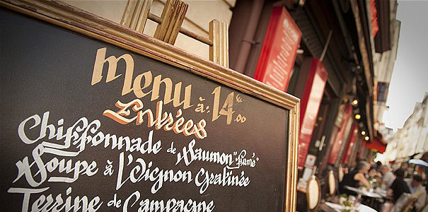

café5963 メニュー
Entrées / Starters前菜
Poissons / Seafoodお魚料理
Viandes / Meatお肉料理
Dessertsデザート

Entrees / Starters前菜
Saumon marine / Marinated salmon \1,800
サーモンマリネ
Jambon de Parme / Assorted of Parma ham \1,900
パルマ産生ハム
Terrine de foie gras / Terrine of foie gras \2,700
フォアグラのテリーヌ
Moules Marinieres(Japon) 500g / Mussels "mariniere" \1,600
ムール貝の白ワイン蒸し
Escargots a la Bourguignonne / Burgundy-style escargots(snails) \1,900
エスカルゴブルゴーニュ風
Poissons / Seafoodお魚料理
Sole meuniere / Sauteed sole meuniere \2,900
舌平目のムニエル
St-Jacques ｇrillee / Grilled scallops \2,850～
ホタテ貝の炭火焼
Poisson du jour / Today's fish 時価
本日の鮮魚
Viandes / Meatお肉料理
Confit de canard / Preserved duck \2,470
鴨のコンフィ
Choucroute / Sauerkraut \2,600
シュークルート
Carres d’agneau roti ou grilles / Roasted or grilled loin of lamb \2,940
仔羊のローストまたはグリル
Dessertsデザート
Creme d’angers \850
クレームダンジェ
Salade de fruits / Fruits salad \850
フルーツサラダ
Creme Amelie / Creme brulee \650
クレームアメリ
Profiteroles 850
プロフィットロール
Mousse au chocolat / Chocolate mousse \850
ムースオショコラ